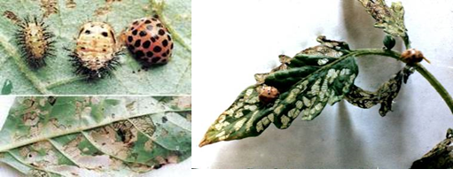
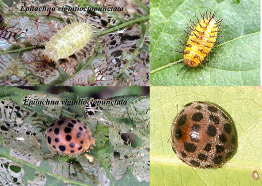

BRINJAL :: MAJOR PESTS :: HADDA / SPOTTED BEETLE
2. Hadda / spotted beetle: Henosepilachna dodecastigma (7-14 spots on each elytra), H. vigintioctopunctata; H. demurille, H. implicata (Coccinellidae[Epilachna = Henosepilachna]: Coleoptera)
Distribution and status: South Canada, USA, Mexico, Guatemala, Africa and South East Asia.
Host range: Brinjal, potato, tomato, cucurbitaceous plants, wild solanaceous plants.
Damage symptoms
|  |
|---|
Both adult and grubs scrap the lower epidermis of leaves in characteristic manner leaving behind stripes of uneaten areas. The leaves give a stifled appearance. In severe infestation all leaves may be eaten off leaving only the veins intact (Skeletonization) and plants may wither.
Bionomics
Egg period: 2-4 days: Cigar shaped, laid in clusters on lower leaf surface, yellow; 120-460 eggs/female. Grub: 10-35 days. Yellowish bearing six rows of longitudinal spines. Pupa: 5-6 days. Yellowish with spines on posterior part; anterior portion being devoid of spines. Pupates on the stem or leaves. Adult E. dodecastigma: Copper-coloured, 6 spots / elytra E. demurille: Dull appearance, light copper coloured and six black spots surrounded by yellowish area on each elytra. E. vigintioctopunctata: 14 spots on each elytra, deep red. Total life period: 20-50 days. 7 generations / year.
|  |
|---|
Management
- Collect and destroy adult beetles, grubs and pupae.
- Shake plants to dislodge grubs, pupae and adults in a pail of kerosenated water early in the morning or collect them mechanically and destroy.
- Spray carbaryl 50% WP 2 kg + wettable sulphur 2 kg or endosulfan 35 EC 1.5 L or malathion 50 EC 1.5L or Azadirachtin 0.03% 2.5-5.0 L in 500 - 750 L of water
- Emulsify 1 lit of Neem oil with 60 g of soap dissolved in ½ L. of water, dilute emulsion by adding 20 lit of water, then mix about 400 g of well crushed garlic and spray.
- Mix diflubenzuron invariably with endosulfan 1.5 L or chlorpyriphos 1.0 L /ha and spray on the crop which reduces the population by nearly 95% in field.